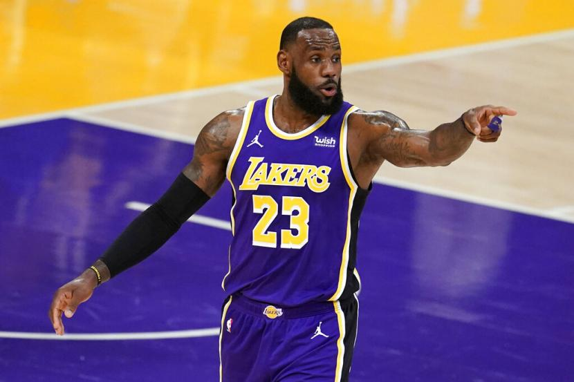
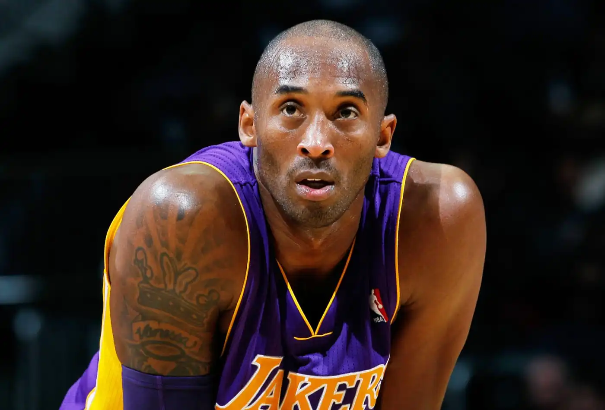
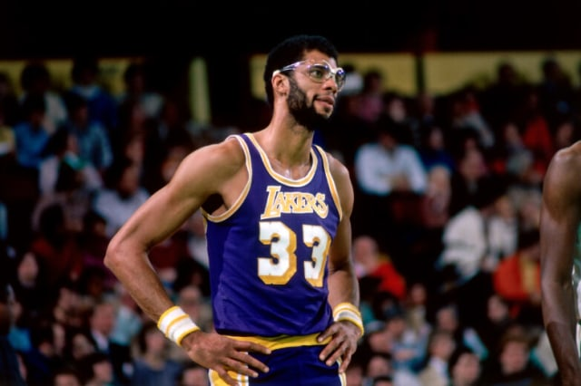
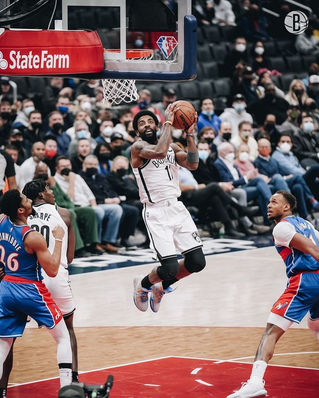

LEBRON JAMES
LeBron Raymone James adalah pemain basket profesional asal Amerika yang bermain untuk Los Angeles Lakers dari National Basketball Association.
Kobe Bryant
Kobe Bean Bryant adalah seorang pemain basket profesional Amerika Serikat. Bermain pada posisi shooting guard, Bryant menghabiskan seluruh 20 tahun karirnya dengan Los Angeles Lakers di National Basketball Association.
Kareem Abdul-Jabbar
Kareem Abdul-Jabbar adalah mantan pemain bola basket profesional NBA berkebangsaan Amerika Serikat, Aktivis, Aktor, Penulis, yang memegang rekor poin terbanyak sepanjang sejarah kompetisi NBA. Kareem Abdul Jabbar pemakai kostum nomor 33 sejak awal kariernya
kyrie irving
Kyrie Andrew Irving adalah seorang pemain basket profesional Amerika Serikat yang bermain untuk Brooklyn Nets di National Basketball Association. Ia mendapatkan penghargaan NBA Rookie of the Year setelah direkrut Cleveland Cavaliers sebagai pemain pilihan pertama secara keseluruhan dalam draf NBA